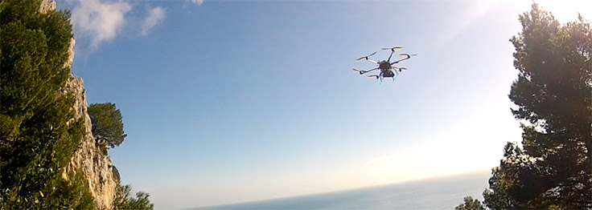
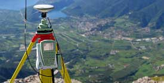

Drone
Comunemente chiamato drone, questo micro elicottero esarotore viene dotato di una fotocamera digitale di cui sono noti i parametri di distorsione. L’utilizzo del drone consente di realizzare geodatabase tridimensionali, con buona precisione e massima ricchezza di dettagli, su terreni di qualsiasi tipo e permette realizzare rilievi 3D ad alto contenuto d’informazioni oltre ad abbinare un’ortofoto ad alta definizione.
Attività
GEOXA opera al servizio di pubbliche amministrazioni allo scopo di informatizzare la gestione del territorio e nello specifico: il rilievo della viabilità, i centri urbani, le infrastrutture, la morfologia del territorio, i sottoservizi.
Inoltre esegue rilievi di porzioni di terreno destinate a progettazioni di vario tipo, picchettamenti per la realizzazione di condotte, rilievi di smottamenti e di pareti rocciose.
Nell’ambito di opere stradali ed autostradali GEOXA collabora con i tecnici progettisti per determinare i sistemi di inquadramento, le poligonali, i rilievi celerimetrici e l’assistenza topografica di cantiere.
Risorse
Capacità umane e tecniche: i tecnici Geoxa con la loro provata esperienza e i più moderni nonché sofisticati strumenti oggi a disposizione garantiscono puntualità e qualità dei servizi offerti.
{kind=link}
{kind=link}
{kind=link}
{kind=link}